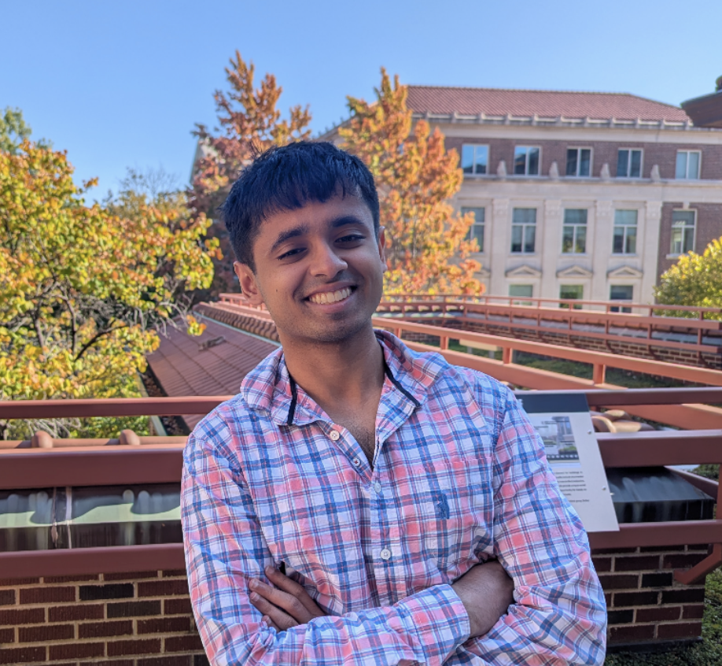

I am a Computer Science PhD student at Purdue University, where I am fortunate to work with Brian Bullins and Ruqi Zhang. My research focuses on efficient optimization and sampling algorithms for machine learning. I'm fortunate to be supported by the NSF ACCESS program for my project on low precision sampling algorithms for large scale training. Previously, I was an undergraduate at Cornell University, where I worked with Zhiru Zhang and Chris De Sa.
In my free time, I enjoy running and lifting. Please feel free to reach out!